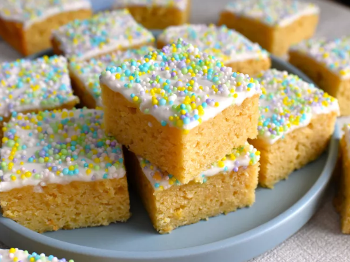

Italian Ricotta Cookie Bars
Home page

DESCRIPTION
In these Italian ricotta cookie bars, you get all the flavor, plus the amazingly soft, delicious, \
cakey texture of ricotta cookies—but without the hassle of making individual cookies.
INCREDIENTS
- 1/2 cup unsalted butter, softened
- 3/4 cup white suga
- 1/4 cup firmly packed light brown sugar
- 1/2 teaspoon salt
STEPS
- Preheat the oven to 350 degrees F (180 degrees C). Line a 9x9-inch square pan with
enough parchment paper to have overhang on all sides, and lightly grease the parchment.
- For cookie bars, beat butter, white sugar, brown sugar, salt, and nutmeg together in a bowl with an electric mixer until
light and fluffy, 2 to 3 minutes. Add in eggs and beat for 1 more minute. Add in ricotta,
- Bake until golden and the center of the bars feel just set when lightly touched, 25 to 30 minutes. Remove from oven and allow to cool completely.
- For icing, mix together powdered sugar, melted butter, lemon juice, vanilla, pinch of salt and 3 teaspoons of milk until smooth. If glaze is too thick, add another teaspoon of milk until it is a pourable consistency. Pour glaze over bars and spread into an even layer. Sprinkle nonpareils over icing before it sets.
Allow glaze to set before cutting into 16 bars. Bars can be placed in the refrigerator to